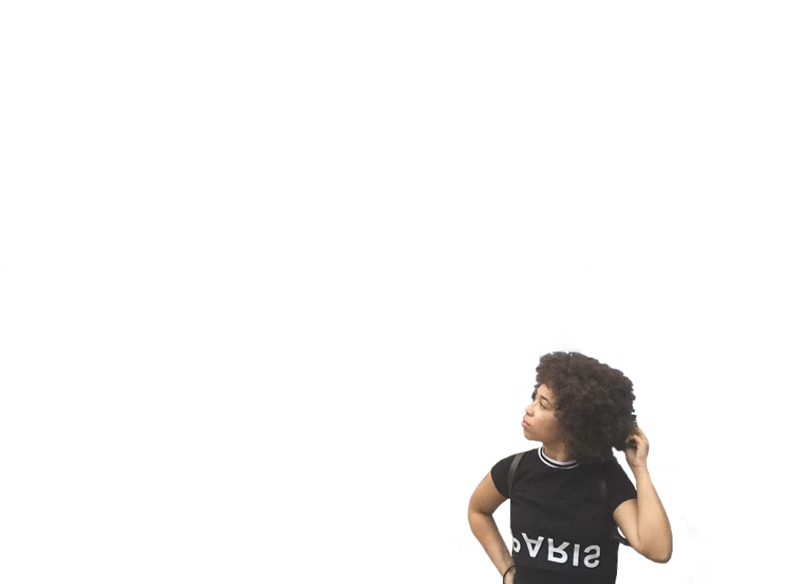
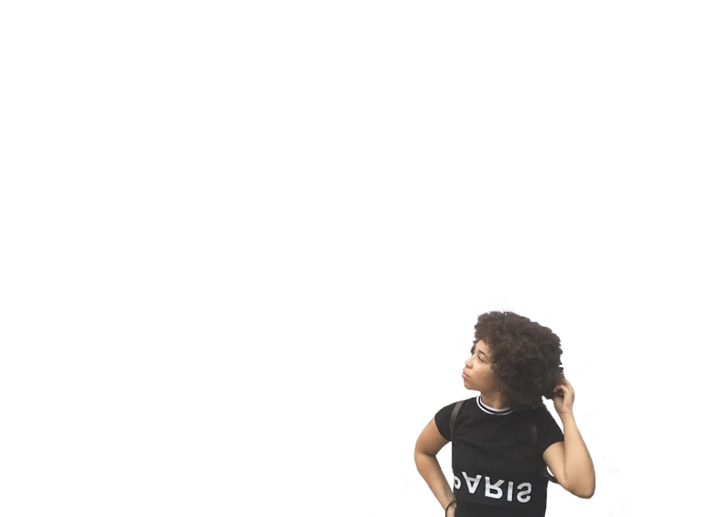

In December of 2020 I received my certification in web development from UCLA and have been coding ever since.
Maya Chisem is a Long Beach, CA native with a nack for getting things done. She is a photographer, coder, and content creator.
As you may already be able to tell,
Maya Chisem is a person of many talents.
From photography, to web development,
to you name it she has done it all.
To get a more in depth report on her
work history click here to see her resume.
Resume
Check out the links below to see more of my work history.
ResumeGithub